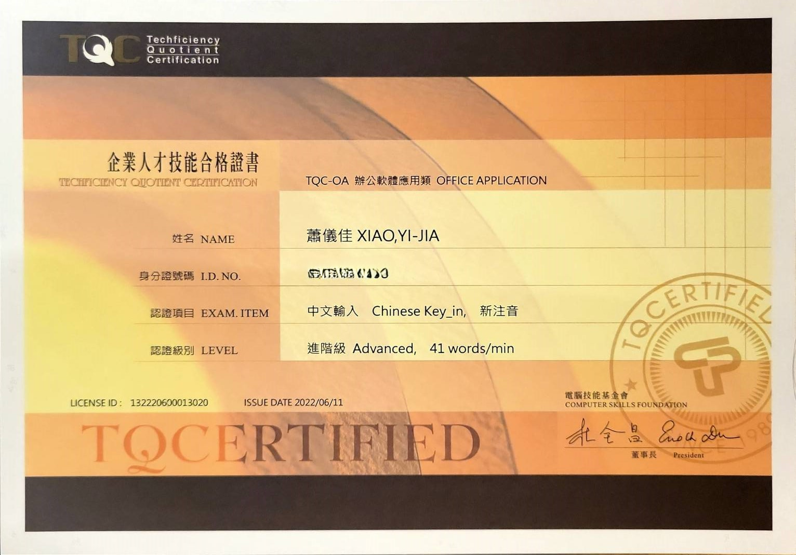

蕭儀佳
CYCU, Information Management
Birthday: 2004/12/30 📍Kaohsiung, Taiwan
MBTI: ISFJ-T
Totle Average grades： 86.86
Ranked in Department： 09.73 %
Personality：Enthusiastic, Independent
Interest：Guitar playing, Singing, Drawing
程式能力｜Programming ability
Python
Java
R
HTML
系上必修｜Compulsory courses
企業資料通訊｜Business Data Communication
管理學｜Management
管理數學｜Mathematics for Management
證照｜Certificate

TQC中打-進階級
當時因一時衝動而報考了這張證照。TQC中文輸入證照讓我在未來需要進行文字處理、資料輸入的工作職位上有著更高的優勢。 它對我來說是一種自我肯定，不僅客觀地證明了我的中文輸入能力，並且在履歷中增添了一項技能。TQC英打-實用級
當時因一時衝動而報考了這張證照。TQC英文輸入證照讓我在未來需要進行文字處理、資料輸入的工作職位上有著更高的優勢。 它對我來說是一種自我肯定，不僅客觀地證明了我的英文輸入能力，並且在履歷中增添了一項技能。GEPT CFER B1
因應學校對英文實力的要求，因此報考了GEPT。 回顧這段準備期，我發現持續學習和模擬考真的十分重要！ 每天撥出時間練習聽說讀寫，並搭配模擬考檢測自己的弱點，讓我能更有效率地加強不足之處。 這張GEPT的成績單不僅僅是達成了學校的要求，也讓我的詞彙量與文法觀念得到了顯著的提升。獎狀｜Certificate
大一｜優秀學生獎狀
管理學
很榮幸能獲得管理學優秀學生的肯定！感謝老師們的悉心指導和同學們的互相幫助，讓我能夠在管理學領域有所收穫， 在學習管理學的過程中，我深深體會到管理不只是知識的累積，更是實踐的藝術。 未來，我將繼續保持謙虛學習的態度，不斷充實自己，為成為一名優秀的管理者而努力。大一｜跨領域合作美感設計競賽
數位媒體組 第三名
在這次跨領域合作美感設計競賽中，我們團隊榮幸獲得數位媒體組第三名。 在此，我們要特別感謝卓綵倫老師的悉心指導，老師不僅傳授我們專業知識，更激發了我們參賽的熱情。老師的鼓勵與支持，是我們堅持下去的最大動力。 回顧整個創作過程，我們透過跨領域的合作，激盪出許多創新的火花。在製作過程中，我們不斷溝通、討論、修改，最終完成了這件作品。 得知得獎的當下，我真的十分激動，這份獎項不僅是对我們共同努力的肯定，更是對跨領域合作、創意發想與數位媒體製作能力的認可。大一｜中原美感生活徵文活動
散文組 佳作
在中原大學這片充滿人文氣息的校園裡，我寫下了這篇散文。 能夠在美感生活徵文活動中獲得散文組佳作，我感到非常榮幸。 感謝評審老師對我作品的肯定，這對我來說是莫大的鼓勵。 這次的徵文活動，讓我更深刻地體會到文字的力量，它不僅能記錄下我對生活的觀察和情感，更能與他人產生共鳴。 未來，我將繼續用文字描繪生活中的點滴，希望能為身邊所發生的一切美好增添一抹亮色！我的作品集｜Portfolio
文學經典閱讀｜文學再見
文學再見是將古代文學中的內容用現代且富有創意的方式進行呈現。 因為個人從小就喜歡唱歌，藉此機會，我將《青青河畔草》跟我家旁邊的澄清湖做連結，搭配符合詩詞的音樂和劇情， 拍攝一首KTV的MV影片並改編成一篇小短文，讓大家唱歌的同時欣賞文學與景點。認識大數據｜期末專案
本次期末專題報告主題為日本股市對日本國民經濟計算（GDP統計）的影響。 本研究將運用李孟哲教授所教導的認識大數據之相關知識與技術，著重探討日本股市波動、與股價指數等相關變數與GDP統計之間的潛在相互關係，以揭示股市與日本國民經濟之間的密切連結。管理數學｜期末專案
本專題報告旨在探討線性規劃在餐廳菜單設計中的應用，目標是最小化食材成本來設計一份滿足營養需求的菜單，前提是不考慮是否所有食材皆有用到。 本文首先介紹餐飲行業成本控制和營養需求，建立線性規劃模型，包括目標函數和多個營養限制條件。 之後通過使用Excel的規劃求解工具，得到各種食材的最優用量，最後分析最佳解的決策意涵，指出了主要瓶頸並提出潛在的改進建議。企業資料通訊｜期末專案
此專案主要為確保資管樓各樓層網路獨立運作且安全穩定，本專案將樓層分區，並以二樓路由器為核心互聯。 各樓層配置不同設備，如防火牆、DNS伺服器、HTTP伺服器，以滿足不同需求。透過專線連接，保障資料傳輸安全。 本方案將資管樓分為三個獨立的網路區段，每個樓層擁有一台路由器管理。二樓路由器作為核心，連接其他樓層的路由器。校內活動經驗｜School Activity Experiences
大一｜資管之夜
我十分感謝大一的自己參與了資管之夜！ 從表演之前，我們一直不斷練習，針對錯誤不斷地修正； 表演之前，我們相互激勵，展現資管一甲最熱情的一面； 表演開始，我們蹦蹦跳跳，為觀眾帶來活潑可愛的氣氛； 表演結束後，我們也互相道謝，感謝彼此為表演的付出， 多虧資管之夜，我得到許多寶貴的記憶。大一｜管理學專案
管理學可以說是大學一年級裡面印象最為深刻的科目之一了！ 在課堂上，我們要撰寫企報告書、製作簡報、預估實作結果、執行企劃，還要把執行過程拍成影片，十分忙碌。 但是，透過這個課程，我也感受到了團隊合作的力量和社區的溫暖，通過自己的行動來為地球家園做出貢獻，我覺得這是相當有價值的體驗。大一｜學生自組專題讀書會
我們自組的專題讀書會主題為「心理學」，讓我對人心的運作有了更深刻的認識。 透過分享個人經驗結合書中理論，我更了解心理學在生活中的應用。 而且與其他同學們交流的過程中，也提升了我的同理心。 我覺得讀書會的討論氛圍很棒，但可以嘗試加入更多互動元素，讓討論更活潑。 總而言之，這次的讀書會讓我對心理學產生了濃厚的興趣，也讓我更了解自己和他人。